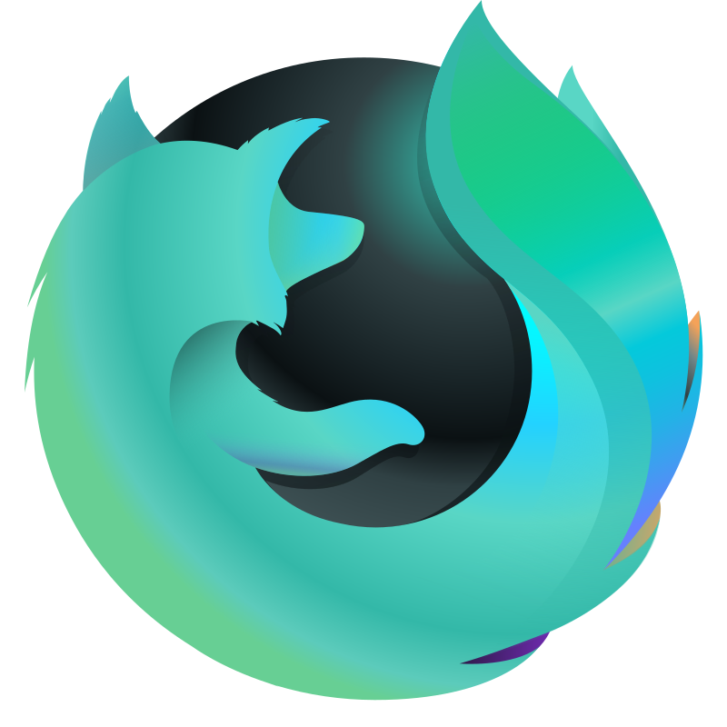
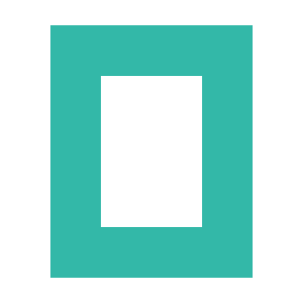
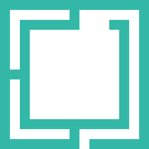
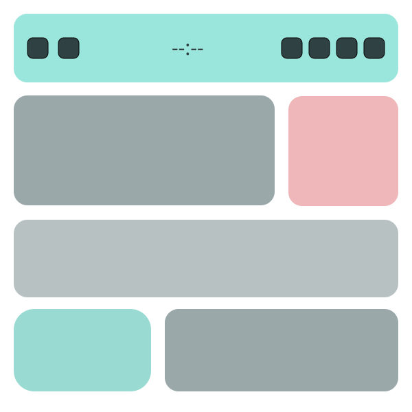
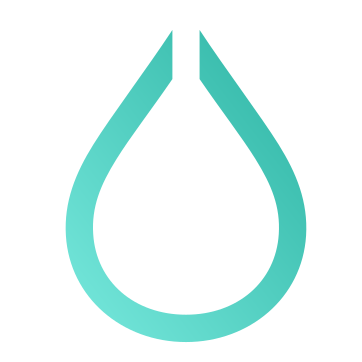

VS Code
A deep editor theme with semantic coverage and UI colors tuned from the shared Leenium palette.
Marketplace
Editor
UI
Leenium is a unified dark palette used across VS Code, Neovim, Firefox, OpenCode, Ghidra, Waybar, Limine, Hyprlock, and the rest of the stack. The whole system stays consistent: foregrounds, borders, accents, and terminals all share the same language.
Each product page shows the palette in context, with previews, install paths, and store links.
A deep editor theme with semantic coverage and UI colors tuned from the shared Leenium palette.

A Neovim colorscheme aligned to the exact Leenium hex set, including highlights, LSP, and UI groups.

A dark Firefox theme extension now published in the Mozilla Add-ons store.

A terminal-first OpenCode theme using the same palette and semantic color language as the rest of Leenium.

A reverse-engineering theme with the shared Leenium palette across the decompiler, listing, and UI chrome.

A shared desktop theme bundle for Omarchy, with colors, Waybar, btop, Chromium, and wallpaper assets.

A floating status bar theme with the shared Leenium palette, tuned to a more Omarchy-like layout.

A bootloader theme with the shared Leenium palette for branding, terminal colors, and startup UI.

A lock screen theme with the shared Leenium palette, custom backdrop, and state-colored actions.
The same palette drives the UI surfaces, code highlights, browser surfaces, and terminal ANSI mapping.
Backgrounds, borders, and selection states stay restrained and consistent.
Each tool gets its own page with previews, links, and install notes.
The palette is the center of the brand and the website, not an afterthought.